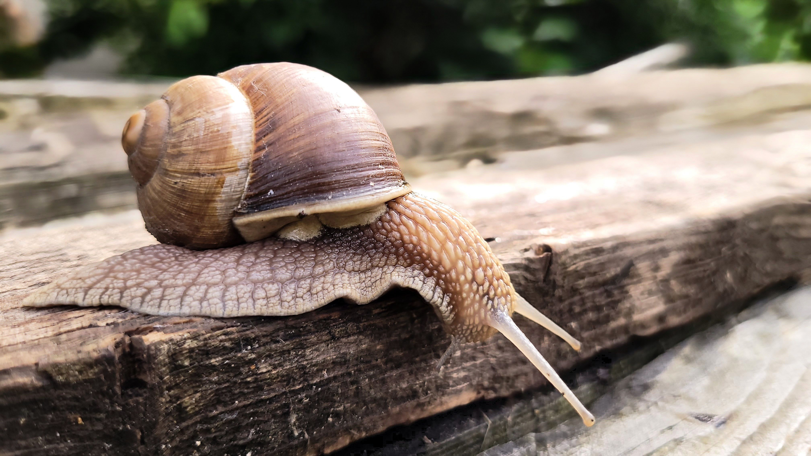
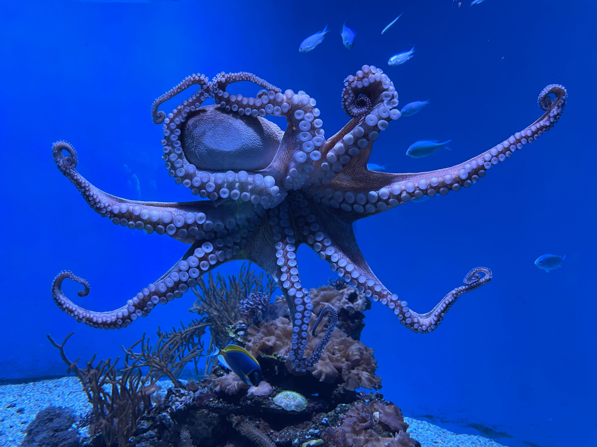
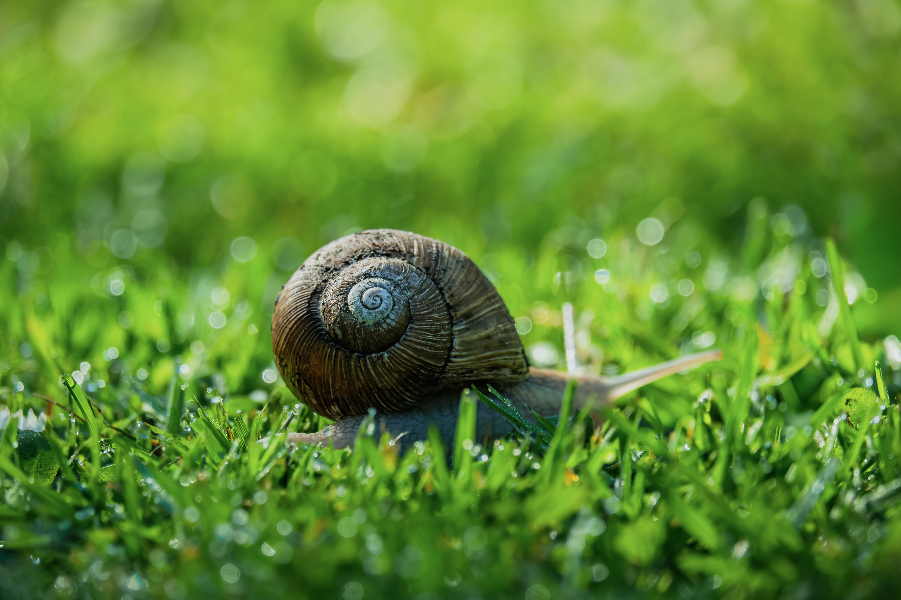
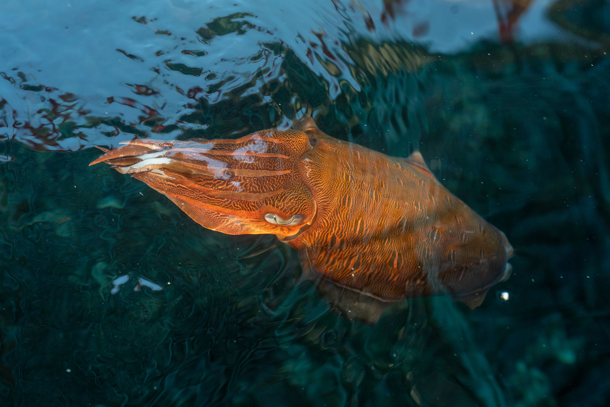
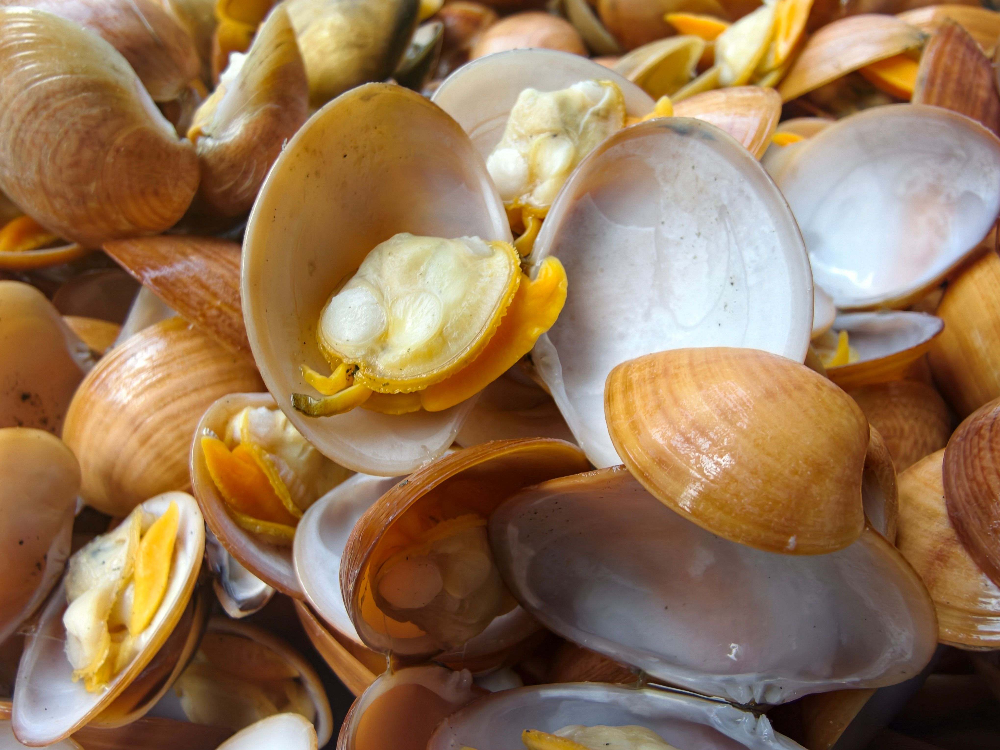
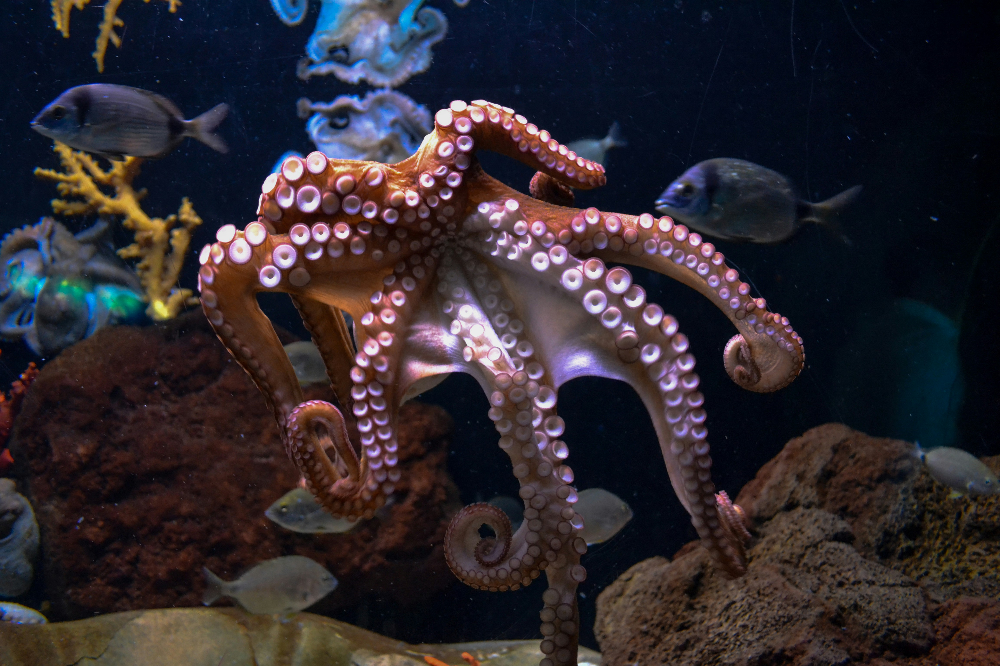

What are Mollusks?
Mollusks comprise the phylum Mollusca, representing one of the largest and most diverse groups of invertebrate animals on Earth. They feature soft, unsegmented bodies that often secrete a hard shell for physical protection.
Spanning remarkable intelligence in cephalopods and slow-moving grazing habits in gastropods, mollusks play vital roles in marine, freshwater, and terrestrial ecosystems.
Key Characteristics
1. Muscular Foot: Most mollusks possess a strong muscular body part used for locomotion, burrowing, or anchoring themselves against ocean currents.
2. Mantle Cavity: A specialized tissue fold that covers the soft visceral mass and is usually responsible for secreting their protective shell layers.
3. Radula Feeding Organ: A unique ribbon-like tongue covered in microscopic chitin teeth used to scrape, cut, or capture food sources.

Meet the Mollusks
While tens of thousands of diverse mollusk species exist globally, here are four iconic and recognizable representatives.

Giant Pacific Octopus
A highly intelligent cephalopod known for problem-solving skills, camouflage mastery, and flexible arms.

Common Garden Snail
A land-dwelling gastropod that carries a spiral shell and glides smoothly across damp terrain using mucus.

Squid
A fast-swimming marine cephalopod equipped with specialized tentacles, jet propulsion, and advanced camouflage abilities.

Giant Clam
The largest living bivalve mollusk, resting securely on tropical coral reefs and harvesting sunlight via algae.

Where Do Mollusks Live?
Mollusks have successfully colonized a massive array of habitats, thriving extensively in deep ocean floors, shallow coastal coral reefs, freshwater rivers, and humid damp land environments.
What Do Mollusks Eat?
Feeding strategies vary dramatically between filter-feeding bivalves, grazing gastropods, and active hunting cephalopods.
Herbivores & Grazers
Snails and limpets use their abrasive radula to scrape algae and plant matter off rocks and garden surfaces.
Filter Feeders
Clams, oysters, and mussels strain microscopic plankton and organic nutrients directly from surrounding water columns.
Active Carnivores
Octopuses and squids hunt fish and crabs using specialized tentacles, sharp beaks, and venomous saliva.
💡 Did You Know?
Octopuses possess three separate hearts and blue-colored copper-based blood instead of iron-based red blood!
Some garden snails can hibernate or estivate inside their shells for up to three years during severe dry weather.
The colossal squid possesses eyes the size of soccer balls—the largest eyes of any animal in the entire animal kingdom.
Quick Facts
85,000+
Recognized mollusk species globally
Global Waters & Land
Found across oceans, freshwater, and moist soil
Soft-Bodied
Invertebrates protected by mantles and shells